Cultural Research to AI Concept Video
Cultural research, worldbuilding, AI visual generation, concept video design.
PDF Portfolio / Visual Design Internship
Visual Design / Digital Media / Interactive Experience
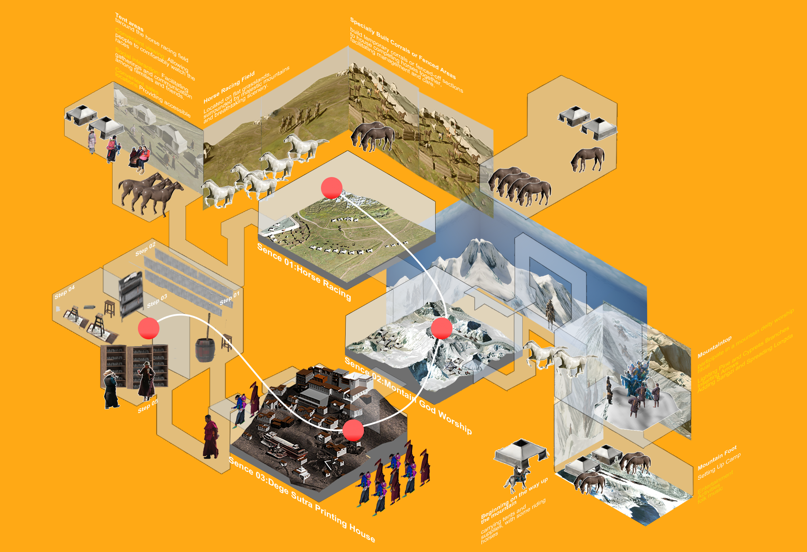
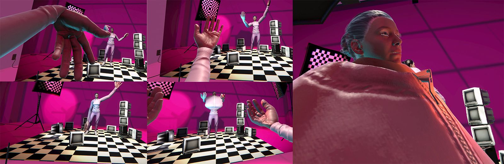
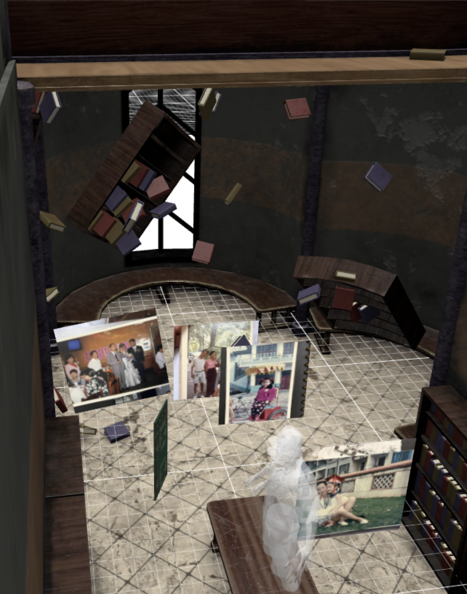
Portfolio Overview
This portfolio presents selected projects from my current website, rewritten and structured for a Graphic Design / Visual Design internship application. The work emphasizes concept development, layout, digital media, AI-assisted visual creation, interaction design, and immersive experience. Each project is shown through a small number of selected visuals so the PDF reads as a designed portfolio rather than a website screenshot.
Focus: Visual Design / Digital Media / AI-assisted Image Workflow / Interaction Design / Immersive Experience
Cultural research, worldbuilding, AI visual generation, concept video design.
Mobile app, AR interaction, UX UI, voice interaction, family care.
VR, spatial interaction, avatar feedback, environment setup.
Spatial archive, virtual exhibition, memory space, shared interaction.
VR interaction, scene setup, object observation, small project.
Selected Project
Tools: Cultural Research / Worldbuilding / AI Visual Generation / Concept Video / VR Planning
This project translates Tibetan cultural research into an AI-assisted concept video and immersive visual direction. I developed the image language from reference boards, route diagrams, storyboard frames, and scene studies, focusing on atmosphere, composition, color, and cultural motifs. The work shows how research can become layout, mood, sequence, and content direction for video, exhibition, and interactive formats.

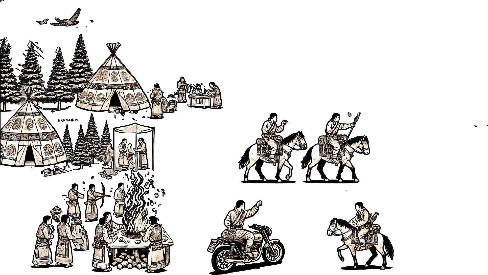

Selected Project
Role: Visual Design / Interface Layout / AR Interaction Concept
This mobile care concept turns user needs into clear interface flows, gentle visual hierarchy, and AR-supported spatial guidance. The project is presented here as digital product design with attention to screen rhythm, layout, information grouping, and emotionally accessible visual language for family care.
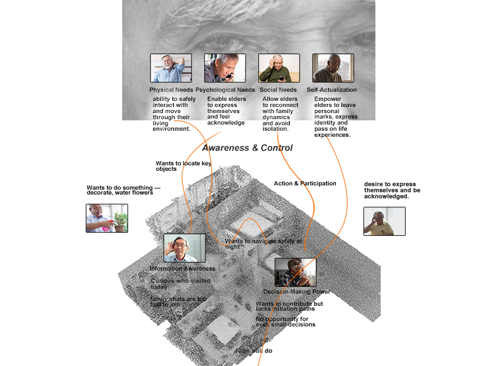
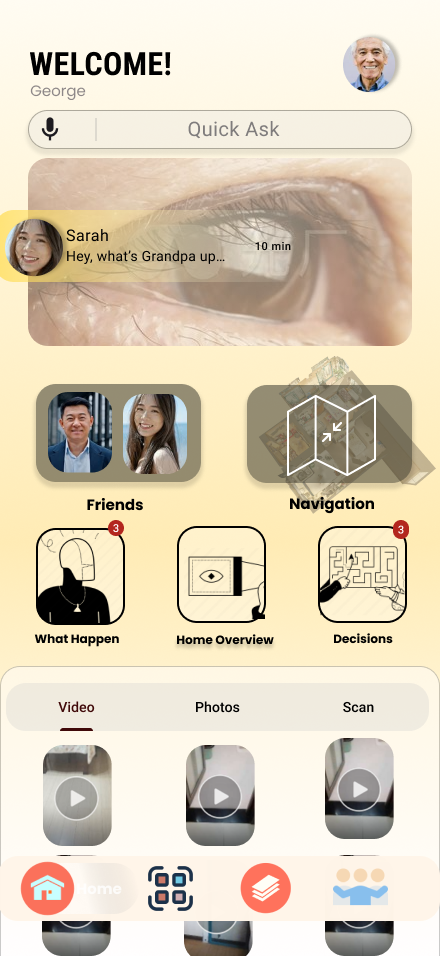
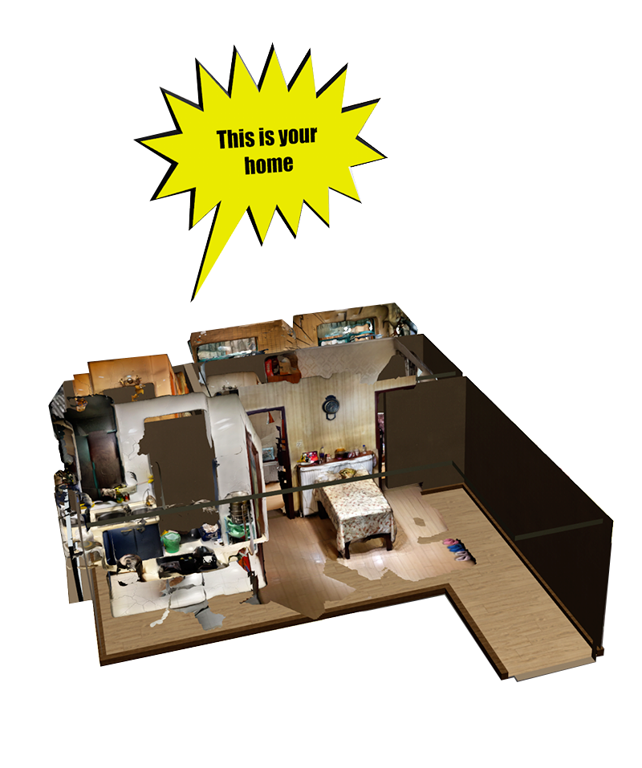
Selected Project
Role: Visual Design / Spatial Interaction / VR Experience Design
VR Experience centers on Morphing Mirror, an immersive work where the viewer meets a changing avatar through a mirror-like interaction. The project communicates visual concept, character staging, and embodied feedback through a restrained scene, a strong key visual, and clear supporting process images.
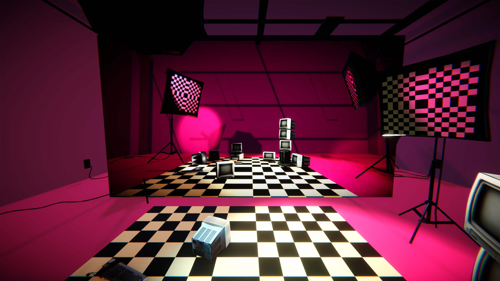
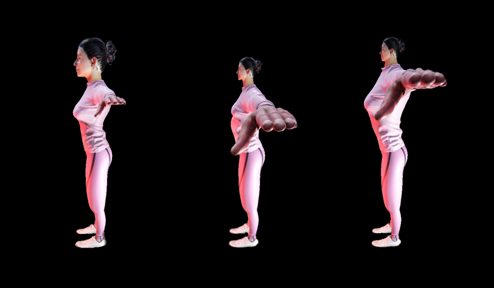
Selected Project
Role: Visual Design / Spatial Archive Design / Interaction Concept
Virtual Album Space transforms family photographs into a shared memory room. The visual direction focuses on spatial layout, image placement, scale, and a calm exhibition-like atmosphere, showing how personal content can be organized into an immersive digital archive.
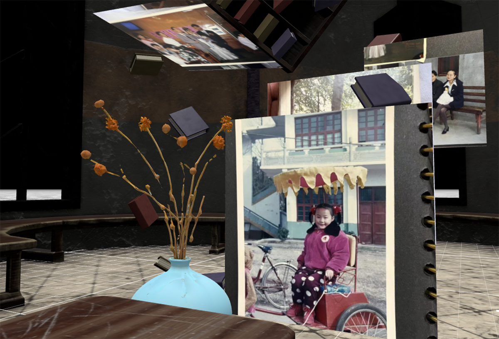
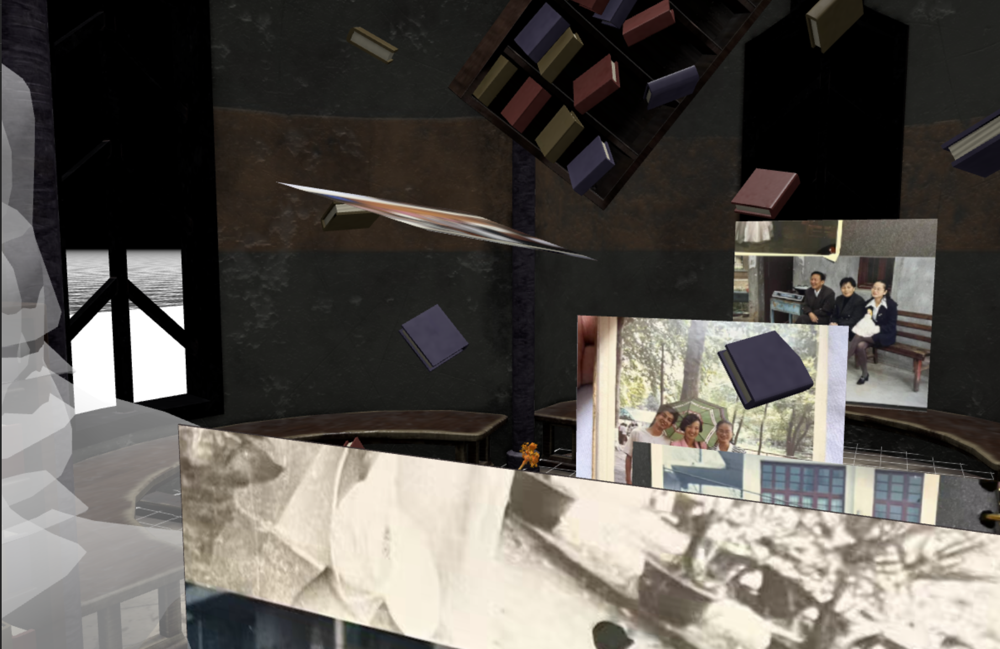
Selected Project
Role: Visual Design / VR Interaction / Scene Layout
VR Phone Repair presents a compact repair workspace as an immersive learning scene. I organized tools, components, wall objects, and workshop details to support object observation and visual clarity, giving technical content a clean spatial structure for screenshot-based review.
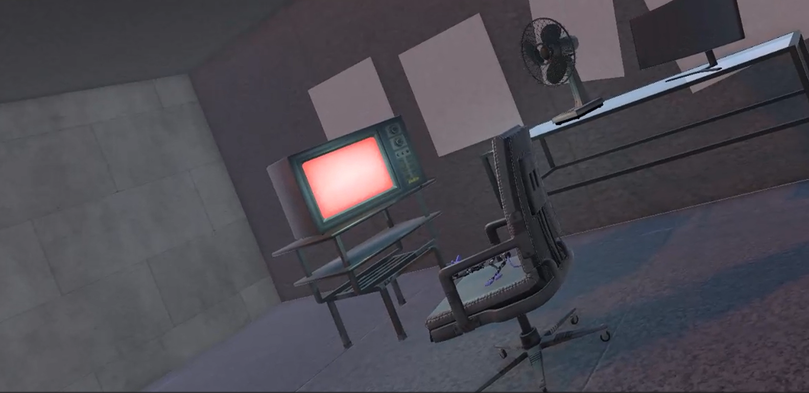
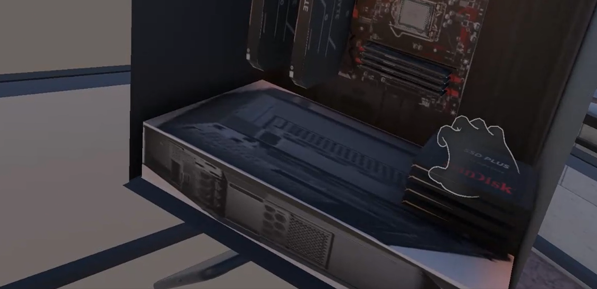
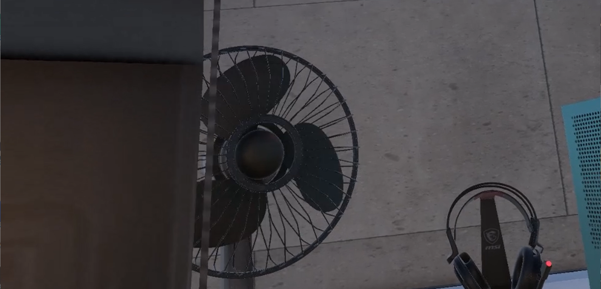
Contact
I am interested in Graphic Design / Visual Design internship roles connected to visual content direction, digital media, AI-assisted image-making, interaction design, and immersive experience. This PDF is prepared for browser export through Ctrl + P and Save as PDF.
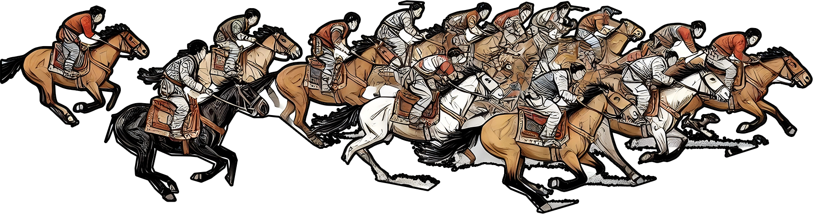

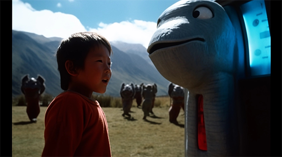